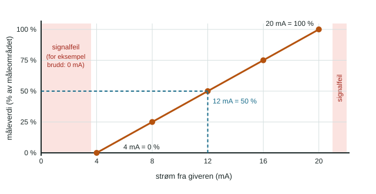

Signalet 4–20 mA
De fleste givere i et prosessanlegg sender målingen som en elektrisk strøm mellom 4 og 20 milliampere (mA). Her lærer du hvorfor nettopp dette signalet brukes, hvordan du regner fra mA til måleverdi og tilbake, og hvordan signalet hjelper deg å finne feil.
En strøm som forteller hvor mye
På siden Givere og transmittere lærte du at giveren sender verdien som en andel av måleområdet. Signalet 4–20 mA gjør det slik:
- 4 mA betyr laveste verdi i måleområdet, altså 0 %.
- 20 mA betyr høyeste verdi, altså 100 %.
- Alt imellom følger en rett linje. 12 mA, midt mellom 4 og 20, betyr 50 %.
Én milliampere er en tusendel ampere. Det er en svært liten strøm. En vannkoker trekker til sammenligning rundt 10 A, altså 10 000 mA.

| Strøm | Del av måleområdet | Trykkgiver 0–10 bar | Temperaturgiver 50–150 °C |
|---|---|---|---|
| 4 mA | 0 % | 0 bar | 50 °C |
| 8 mA | 25 % | 2,5 bar | 75 °C |
| 12 mA | 50 % | 5 bar | 100 °C |
| 16 mA | 75 % | 7,5 bar | 125 °C |
| 20 mA | 100 % | 10 bar | 150 °C |
Hvorfor strøm?
Giveren kunne sendt en spenning i stedet. Men strøm har to store fordeler i et anlegg:
- Lange kabler gjør ikke noe. Strømmen er den samme overalt i en lukket krets, også gjennom flere hundre meter kabel. En spenning ville falt litt på veien, og da ville styresystemet lest av feil verdi.
- Støy gjør lite. Motorer og annet elektrisk utstyr lager elektrisk støy. Et strømsignal blir mye mindre påvirket av støyen enn et spenningssignal.
Giveren, kabelen og inngangen på styresystemet danner en lukket krets som kalles en strømsløyfe. En strømforsyning, oftest på 24 volt, sørger for at strømmen kan gå. Giveren bestemmer hvor stor strømmen skal være.
Hvorfor 4 og ikke 0?
Signalet starter på 4 mA og ikke på 0. Det kalles levende null, og det har to grunner:
- Brudd kan oppdages. Går kabelen av, blir strømmen 0 mA. Hadde 0 mA betydd 0 %, kunne ikke styresystemet skilt et kabelbrudd fra en tom tank. Nå vet det at 0 mA betyr feil.
- Giveren får strøm. Giveren trenger litt strøm selv for at elektronikken skal virke. Med minst 4 mA i sløyfa hele tiden kan giveren få strømmen sin gjennom de to samme lederne som signalet går i.
Styresystemet melder signalfeil når strømmen er tydelig utenfor 4–20 mA. Mange anlegg bruker grensene under ca. 3,6 mA og over ca. 21 mA, etter en anbefaling som kalles NAMUR. Litt under 4 mA eller litt over 20 mA betyr vanligvis bare at verdien er litt utenfor måleområdet. Grensene kan være litt forskjellige fra anlegg til anlegg.
En smart giver som oppdager en feil i seg selv, kan sende en strøm utenfor området med vilje, for eksempel 3,6 mA eller 21 mA. Da får styresystemet beskjed om at målingen ikke kan stoles på.
Fra mA til måleverdi
Slik regner du om fra strøm til måleverdi:
- Trekk fra 4 mA. Da vet du hvor langt over nullpunktet signalet er.
- Del på 16 mA, som er hele signalområdet (20 − 4). Da får du andelen av måleområdet.
- Gang andelen med bredden på måleområdet (høyeste minus laveste verdi).
- Legg til laveste verdi i måleområdet. Starter måleområdet på 0, er du ferdig etter steg 3.
Som formel, der I er strømmen i mA:
\[ \text{måleverdi} = \text{laveste verdi} + \frac{I - 4}{16} \cdot (\text{høyeste verdi} - \text{laveste verdi}) \]
Oppgave: En temperaturgiver har måleområdet 50–150 °C og sender 10 mA. Hvilken temperatur er det?
Løsning:
- Trekk fra 4 mA: 10 mA − 4 mA = 6 mA.
- Del på 16 mA: \( \dfrac{6}{16} = 0{,}375 \). Signalet er 37,5 % av måleområdet.
- Bredden på måleområdet er 150 °C − 50 °C = 100 °C. Gang: \( 0{,}375 \cdot 100 \text{ °C} = 37{,}5 \text{ °C} \).
- Legg til laveste verdi: 50 °C + 37,5 °C = 87,5 °C.
Svar: Temperaturen er 87,5 °C. Glemmer du steg 4, får du 37,5 °C, som er under måleområdet. Sjekk alltid at svaret ligger innenfor måleområdet.
Fra måleverdi til mA
Noen ganger må du gå andre veien, for eksempel når du skal sjekke at en giver sender riktig strøm. Da gjør du stegene baklengs:
\[ I = 4 + 16 \cdot \frac{\text{måleverdi} - \text{laveste verdi}}{\text{høyeste verdi} - \text{laveste verdi}} \]
Oppgave: En trykkgiver har måleområdet 0–6 bar. Manometeret ved siden av viser 4,5 bar. Hvor mange mA skal giveren sende?
Løsning:
- Finn andelen av måleområdet: \( \dfrac{4{,}5 \text{ bar}}{6 \text{ bar}} = 0{,}75 \), altså 75 %.
- Gang med 16 mA: \( 0{,}75 \cdot 16 \text{ mA} = 12 \text{ mA} \).
- Legg til 4 mA: 12 mA + 4 mA = 16 mA.
Svar: Giveren skal sende 16 mA. Måler du en helt annen strøm, viser enten giveren eller manometeret feil.
Signalet ut til ventilen
4–20 mA brukes ikke bare inn til styresystemet. Det brukes også ut fra styresystemet til en reguleringsventil. Da betyr strømmen hvor mye ventilen skal åpne. Ofte betyr 4 mA stengt og 20 mA helt åpen, men på noen ventiler er det omvendt. Det avhenger av hvilken stilling ventilen skal gå til hvis signalet eller lufta blir borte.
På ventilen sitter en ventilstiller. Den tar imot strømsignalet og styrer lufttrykket til ventilen, slik at ventilen står der signalet sier.
Feilsøking med signalet
Strømmen i sløyfa forteller mye om hvor en feil sitter:
| Strøm i sløyfa | Hva det kan bety |
|---|---|
| 0 mA | Brudd i kabelen, løs ledning i en koblingsboks, ingen strømforsyning eller død giver. |
| Rundt 3,6 mA eller lavere | Giveren melder selv om en feil, eller sløyfa har en feil. |
| 4–20 mA, men verdien virker feil | Strømmen er innenfor området. Feilen kan sitte i målingen (føler, tett impulsrør, feil tetthet ved nivåmåling med trykk), i kalibreringen av giveren eller i måleområdet i giveren eller styresystemet. |
| Rundt 21 mA eller høyere | Giveren melder selv om en feil, eller det er kortslutning i sløyfa. |
Instrumentteknikeren kan måle strømmen i sløyfa med et multimeter. Med en sløyfekalibrator kan teknikeren også sende en kjent strøm inn i sløyfa, for eksempel 12 mA, og sjekke at skjermen i kontrollrommet viser 50 %. Det kalles en sløyfetest, og den gjøres blant annet når nye givere er montert.
Situasjon: Midt på natta faller nivået i en tank fra 62 % til «signalfeil» på skjermen. Pumpa som fyller tanken, går som før, og seglasset ute ved tanken viser at nivået står omtrent der det sto.
Hva kan være feil? Nivået kan ikke ha falt så fort når pumpa fyller, og seglasset viser at tanken ikke er tom. Det er altså signalet som har falt bort. Teknikeren måler 0 mA i sløyfa. Det betyr brudd, ofte en løs ledning i en koblingsboks eller en skadet kabel. Fordi signalet startet på 4 mA, kunne styresystemet melde signalfeil i stedet for å vise at tanken var tom.
- Avtal med kontrollrommet før noen kobler i en sløyfe. Når signalet blir borte eller endres, kan regulatorer, alarmer og forriglinger reagere.
- En sløyfekalibrator sender en falsk måleverdi til styresystemet. Regulatoren og forriglingene på den målingen må være koblet ut eller satt i manuell etter prosedyren før testen.
- I Ex-områder må også multimeter og kalibrator være godkjent for området, og arbeidet krever tillatelse.
- Mange forriglinger er laget slik at signalfeil gir en trygg tilstand, for eksempel at en pumpe stopper. Derfor kan en løs ledning stoppe en del av anlegget.
Test deg selv
Hva betyr 4 mA fra en giver?
- At giveren er i stykker.
- Laveste verdi i måleområdet, altså 0 %.
- 4 % av måleområdet.
Signalet starter på 4 mA. 4 mA er laveste verdi i måleområdet (0 %), og 20 mA er høyeste verdi (100 %).
En trykkgiver har måleområdet 0–8 bar og sender 12 mA. Hva er trykket?
- 3 bar
- 4 bar
- 6 bar
12 mA er midt mellom 4 og 20 mA, altså 50 % av måleområdet. 50 % av 8 bar er 4 bar.
En nivågiver har måleområdet 0–100 %. Nivået er 75 %. Hvilken strøm sender giveren?
- 12 mA
- 15 mA
- 16 mA
\( 4 + 16 \cdot 0{,}75 = 4 + 12 = 16 \) mA. Svaret 15 mA får du hvis du glemmer at signalet starter på 4 mA og regner 75 % av 20 mA.
Hvorfor starter signalet på 4 mA og ikke på 0 mA?
- Fordi 0 mA er farlig.
- Fordi styresystemet da kan skille et kabelbrudd (0 mA) fra laveste måleverdi (4 mA).
- Fordi det gir mer nøyaktige målinger.
Med levende null betyr 0 mA alltid feil. Den minste strømmen gir også giveren nok strøm til å drive elektronikken sin.
Skjermen viser «signalfeil» på en temperaturmåling, og teknikeren måler 0 mA i sløyfa. Hva er mest sannsynlig?
- Temperaturen er under måleområdet.
- Måleområdet er feil innstilt i styresystemet.
- Brudd i kabelen, en løs ledning eller ingen strømforsyning.
Lav temperatur gir 4 mA eller litt under, ikke 0 mA. Feil måleområde gir feil verdi, men strømmen er fortsatt mellom 4 og 20 mA. 0 mA betyr at strømmen ikke kommer fram.
Ordliste
| Begrep | Forklaring | Engelsk |
|---|---|---|
| 4–20 mA | Standardsignal der giveren sender en strøm mellom 4 og 20 milliampere. 4 mA er 0 % og 20 mA er 100 % av måleområdet. | 4–20 mA signal |
| milliampere | En tusendel ampere. Enheten for den lille strømmen i signalet fra en giver. Skrives mA. | |
| strømsløyfe | Lukket krets med strømforsyning, giver, kabel og inngang på styresystemet, der signalet går som en strøm. | current loop |
| levende null | At signalet starter på 4 mA og ikke 0 mA, slik at 0 mA alltid betyr feil, for eksempel kabelbrudd. | live zero |
| signalfeil | Melding fra styresystemet om at strømmen er utenfor det normale området, slik at målingen ikke kan stoles på. | signal fault, bad PV |
| ventilstiller | Enhet på en reguleringsventil som tar imot signalet fra styresystemet og styrer lufttrykket, slik at ventilen står i riktig stilling. | valve positioner |
| sløyfekalibrator | Instrument som kan måle strømmen i en sløyfe, eller sende en kjent strøm inn i den for å teste den. | loop calibrator |
Les mer
- PLS viser hvordan styresystemet tar imot analoge signaler, med et eget regneeksempel.
- Reguleringssløyfen viser hvordan signalet fra giveren og signalet til ventilen henger sammen i en sløyfe.
Om kildene: Teksten, eksemplene og figurene på denne siden er laget for dette nettstedet. Siden bygger på undervisningsopplegg i kjemiprosess- og laboratoriefag ved Sauda vgs, som er utarbeidet med utgangspunkt i blant annet Kjemien stemmer, Laboranten og åpne nettkilder.